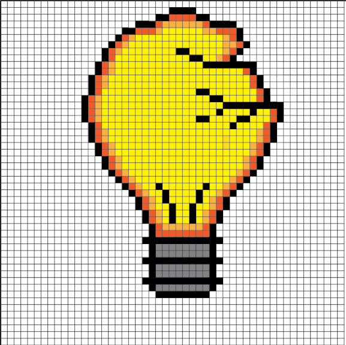
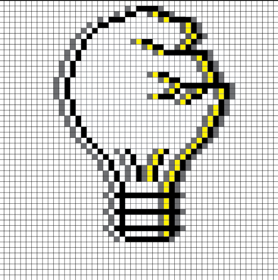
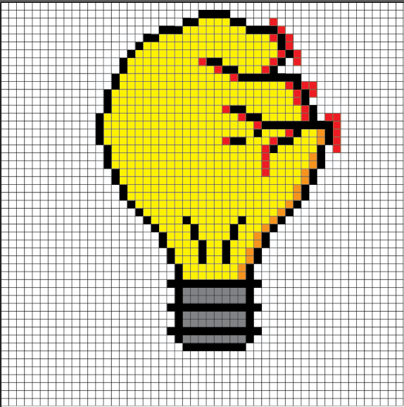

afleveringen
Je hebt waarschijnlijk betere dingen te doen, maar waarom zou je dat doen als je onze ongefilterde onzin kunt luisteren? Terwijl we hier druk aan het opnemen zijn, beloven we in ieder geval dat deze aflevering je een paar minuten plezier (en verwarring) zal bezorgen."
Aflevering 1

"We testen de meest belachelijke en veelbelovende lifehacks van het internet... met rampzalige resultaten! 🤦♂️😂 Van DIY-projecten die je keuken zouden moeten redden tot 'geniale' trucjes die je leven makkelijker zouden maken — we probeerden ze allemaal. Spoiler: het internet liegt. Mis onze hilarische pogingen en gigantische fails niet! 👇"
Aflevering 2
"Welkom bij de ultieme gids voor het verpesten van je dag met mislukte lifehacks! 🥳 We gingen vol enthousiasme aan de slag met de meest 'geniale' trucs van het internet, want natuurlijk vertrouwen we random video's van vreemden. Spoiler: het werkte niet. Maar hé, waarom zou je ook verwachten dat je een hele maaltijd kunt koken met een strijkijzer? Ben je klaar om je tijd compleet te verspillen aan onze epische fails? Perfect. Druk op play, lach om ons falen, en vertel jezelf dat jij het beter zou doen. We weten dat je dat niet gaat proberen. 😉"
Aflevering 3
"Welkom bij de ultieme gids voor het verpesten van je dag met mislukte lifehacks! 🥳 We gingen vol enthousiasme aan de slag met de meest 'geniale' trucs van het internet, want natuurlijk vertrouwen we random video's van vreemden. Spoiler: het werkte niet. Maar hé, waarom zou je ook verwachten dat je een hele maaltijd kunt koken met een strijkijzer? Ben je klaar om je tijd compleet te verspillen aan onze epische fails? Perfect. Druk op play, lach om ons falen, en vertel jezelf dat jij het beter zou doen. We weten dat je dat niet gaat proberen. 😉"
recording
Stil we zijn aan het opnemen!
"We zijn op dit moment bezig met het opnemen van een nieuwe aflevering van onze podcast, en geloof ons, het is een chaos van epische proporties. Terwijl we hier zitten met microfoons die soms niet helemaal willen meewerken, zijn we ook nog steeds op zoek naar de 'perfecte' grap die nooit komt. Dus als je denkt dat het hier wat rommelig klinkt, dan heb je gelijk. Maar hé, we werken hard, of zo. Houd vol, want dit wordt een avontuur waar zelfs wij niet zeker van zijn hoe het eindigt!"